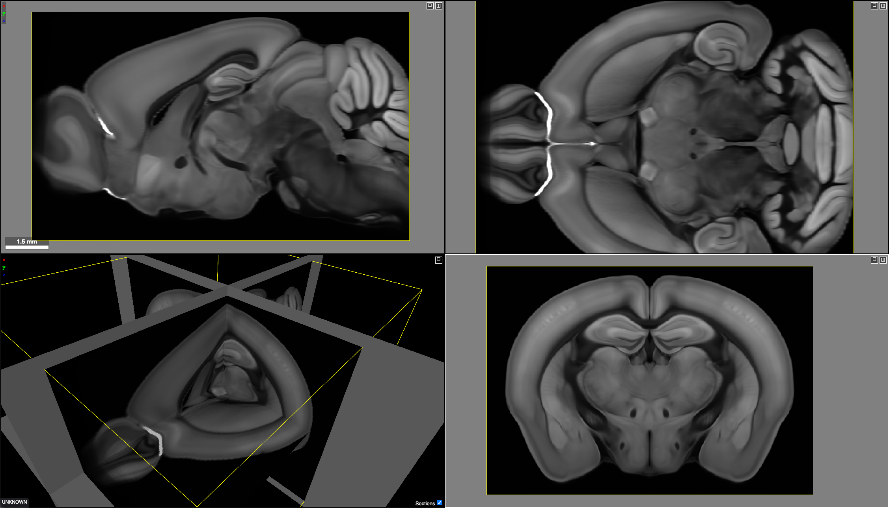
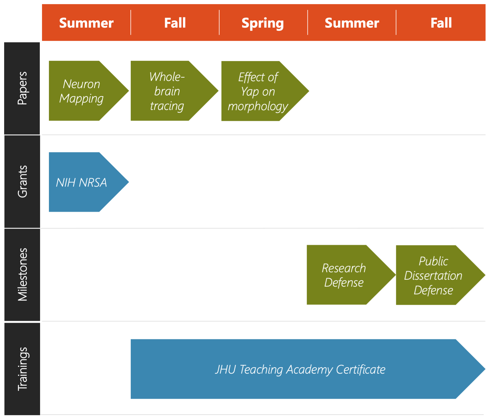

### The Frenet Frame of Neuronal Processes #### Tools for Reconstruction and Analysis Thomas L. Athey Thesis Proposal May 6, 2022 <br> <img src="../../images/funding/jhu_bme_blue.jpg" STYLE="width:100%;" /> <!-- <img src="../images/funding/KNDI.png" STYLE="HEIGHT:95px;"/> --> --- ### What we've done - Fit splines to neuron traces and study curvature/torsion across axonal arbors.<sup>1</sup> - Develop method to string together neuron fragments and validate on partial axons from MouseLight data.<sup>2</sup> ### What I propose we do - <b>Improve</b>: Incorporate observed geometry (Aim 1). - <b>Scale</b>: Whole-brain, sub-micron resolution images (Sub-Aim 1a). - <b>Apply</b>: Study genetic factors of morphology (Sub-Aim 1b). - <b>Map</b>: Accurately deform traces to atlas space (Aim 2). <footer, style="font-size: 12px"> (1) Athey et. al. (2021) Fitting Splines to Axonal Arbors Quantifies Relationship Between Branch Order and Geometry. <i> Front. Neuroinform. </i> <br> (2) Athey et al. (2022) Hidden Markov modeling for maximum probability neuron reconstruction. <i>Commun Biol</i>. </footer> --- ### Common Thread <div class="row"> <div class="column2"> </div> <div class="column2"> Frenet-Serret formulas completely characterize smooth curves with nonzero curvature <br><br> $T' = \kappa N$ <br> $N' = -\kappa T + \tau B$ <br> $B' = -\tau N$ <br> $\kappa$ - curvature $\tau$ - torsion </div> </div> - Varies across different parts of axonal arbors<sup>1</sup> and between brain regions.<sup>2</sup> - Useful for automated reconstruction.<sup>3,4</sup> - Central to spline interpolation methods.<sup>5</sup> <footer, style="font-size: 12px"> (1) Athey et. al., 2021. (2) Phan et al., 2020. (3) Athey et al., 2022. (4) Radojevic and Meijering, 2017. (5) Kunoth et. al., 2017. </footer> --- ## Aim 1: Develop a semi-automatic neuron reconstruction algorithm that incorporates curvature and torsion priors --- ### ViterBrain Overview <img src="images/fig2_algorithm.jpg" STYLE="width:100%;" /> <footer, style="font-size: 12px"> Athey et al. (2022) Hidden Markov modeling for maximum probability neuron reconstruction. <i>Commun Biol</i>. </footer> --- ### ViterBrain Overview cont. <img src="images/fig2_algorithm2.png" STYLE="width:100%;" /> --- ### Improve Prior Distribution --- ## Sub-Aim 1a: Scale the algorithm to sub-micron resolution, whole-brain images --- ### Current Scale - 0.35 x 0.35 x 100 cubic microns --- ## Sub-Aim 1b: Apply method to reconstruct Layer 2/3 cortical neurons to investigate the effects of Drebrin and Yap on neuron morphology --- ### Reconstructing Mutant Neurons <div class="row"> <div class="column2"> Drebrin<sup>1</sup> Images and traces acquired by Kolodkin lab. </div> <div class="column2"> Yap <br> - Yap has been shown to influence dendritic morphology of Purkinje cells,<sup>2</sup> but its role in the morphology of cortical neurons has never been studied. - Images and traces to be acquired by Kolodkin lab. </div> </div> <footer, style="font-size: 12px"> (1) Dorskind (2021). Laminar-specific innervation by layer II/III neuronos in the somatosensory cortex. <i> PhD thesis </i>. <br> (2) Rojek et. al. (2019). Amot and yap1 regulate neuronal dendritic tree complexity and locomotor coordination in mice. <i> PLoS Bio. </i>. </footer> --- ## Aim 2: Develop method to compose diffeomorphisms derived from image registration with 3D neuronal curves --- ### Image Registration $$ \min_{v:\dot \phi_t = v_t(\phi_t)} \left( \int_0^1 ||v_t||_V^2 dt + ||I_0 \circ \phi^{-1} - I_1||^2 \right) $$ <font size="-1">Beg, Miller, Trouvé, Younes, 2005. </font> <div class="row"> <div class="column2"> $I_0$ - Allen Reference Atlas  <img src="images/atlas_parc.png" STYLE="width:75%;" class="center"/> </div> <div class="column2"> $I_1$ - Serial 2-photon tomography <img src="images/axons.png" STYLE="width:85%;" class="center"/> </div> </div> <a href="https://cloudreg.neurodata.io/">CloudReg: Chandrashekhar et. al., 2021.</a> --- ### Target Space --- ### Mapping Neurons to Atlas Space $$ c: [0,L] \rightarrow \mathbb{R}^3 $$ $$ \phi: \mathbb{R}^3 \rightarrow \mathbb{R}^3 $$ We have data: $$\lbrace (t_1, c(t_1)),(t_2, c(t_2)),...,(t_n, c(t_n)) \rbrace$$ We need numerical algorithms for: $$c_\phi = \phi \circ c: [0,L] \rightarrow \mathbb{R}^3$$ --- ## Sub-Aim 2a. Characterize the effect of discrete sampling on mapped morphologies --- ### How to Map Sequences of Points? - ...a single displacement vector field which was used to align reconstructed neurons to the CCF.<sup>1</sup> - ...our reconstructed neurons were mapped onto ABA reference brain by calculated affine and non-rigid transformation accordingly.<sup>2</sup> <footer, style="font-size: 12px"> (1) Gao et. al. (2021) Single-neuron projectome of mouse prefrontal cortex. <i> Nat. Neuro. </i> <br> (2) Winnubst et al. (2019) Reconstruction of 1,000 Projection Neurons Reveals New Cell Types and Organization of Long-Range Connectivity in the Mouse Brain. <i>Cell</i>. </footer> --- ### Mapped Single Path from Thalamocortical Neuron <div class="row"> <div class="column2"> </div> <div class="column2"> <img src="images/atlas_parc.png" STYLE="width:100%;" class="center"/> </div> </div> <div class="row"> <div class="column2"> - Original sampling (right) <br> - 5 micron sampling <br> - Discrete Frechet distance between transformations: 2.5 microns <br> </div> <div class="column2"> </div> </div> --- ## Sub-Aim 2b. Compute the effects of diffeomorphic image registrations on the Frenet frame of neuronal curves --- ### B-Splines - Defined by a degree $p$ and a non-decreasing knot sequence $\lbrace \xi_i \rbrace_1^{n+p+1}$. - Span spaces of piecewise polynomials.<sup>1</sup> - Good local approximators for Sobolev functions.<sup>1</sup> - Fast algorithms that minimize derivative discontinuities with for a given interpolation error. <sup>2</sup> Question: For $\phi$ derived from LDDMM, does $c \in \mathbb{S}^\xi_p$ imply $\phi \circ c \in \mathbb{S}^{\omicron}_q$? - If so (or if not?): transform knot coordinates, and their derivatives <footer, style="font-size: 12px"> (1) Kunoth et. al. (2017) Splines and PDEs: From Approximation Theory to Numerical Linear Algebra. <i> Springer </i> <br> (2) Dierckx (1982) Algorithms for smoothing data with periodic and parametric splines. <i> Comp. Graph. and Im. Proc. </i> </footer> --- ### Derivatives of $\phi \circ c$ $c_\phi=\phi \circ c : [0,L] \rightarrow \mathbb{R}^3$ $c_\phi'(t)=(F \circ c)'(t) = DF(c(t))\cdot c'(t)$ $c_\phi''(t) = D^2F(t)\cdot c'(t) + DF(c(t))\cdot c''(t)$* $c_\phi'''(t)=D^3F(t)\cdot c'(t) + 2 D^2F(t)\cdot c''(t) + DF(c(t))\cdot c'''(t)$* Implement numerically and validate on real neurons. <footer, style="font-size: 12px"> * $D^2 F$ and $D^3 F$ defined in Supplement </footer> --- ### FIRM Software Standards Open-source Python package: <a href="http://brainlit.neurodata.io/">brainlit</a> - <b>Findable</b> - <b>Installable</b> - <b>Runnable</b> - <b>Modifiable</b> <footer, style="font-size: 12px"> Vogelstein (2018). The firm guiding principles for scientific software development and stewardship </footer> --- ### TODO  --- ### Acknowledgements <div class="row"> <div class="column2"> <img src="../../images/neurodata_blue.png" STYLE="width:50%;" class="left"/> </div> <div class="column2"> <img src="../../images/cis.png" STYLE="width:50%;" class="right"/> </div> </div> --- ## Supplement --- ### Derivatives of $c_\phi$ $D^2F$ is the $3 \times 3$ matrix whose entry at $i,j$ is given by $\langle \nabla \frac{\partial f_i}{\partial x_j}(c(t)), c'(t) \rangle$ where $x_j$ is the $j^{th}$ coordinate of $\mathbb{R}^3$, and $\langle \cdot, \cdot \rangle$ is the standard Euclidean inner product. <br> <br> $D^3F$ is the $3 \times 3$ matrix whose entry at $i,j$ is given by $D^3F(c(t))_{i,j} = \langle A (c(t)) \cdot c'(t), c'(t) \rangle + \langle \nabla \frac{\partial f_i}{\partial x_j}(c(t)), c''(t) \rangle$ with $A=H_{\frac{\partial f_i}{\partial x_j}}$, the Hessian matrix of the function $\frac{\partial f_i}{\partial x_j}$.